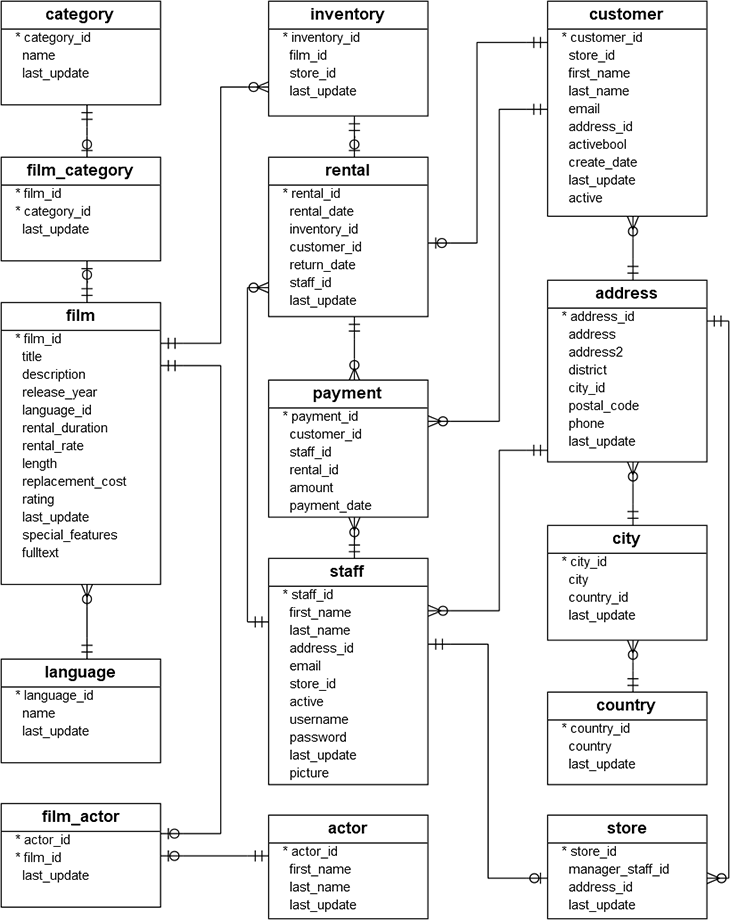
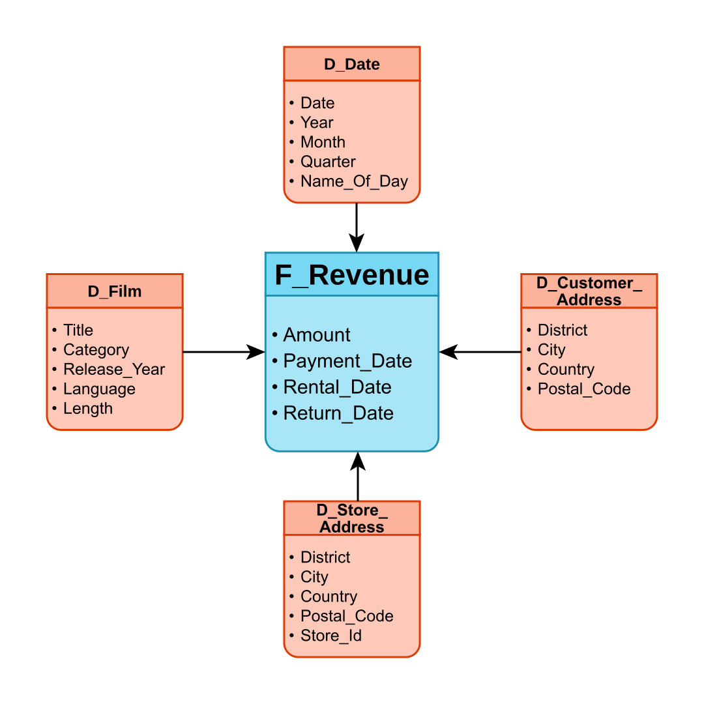
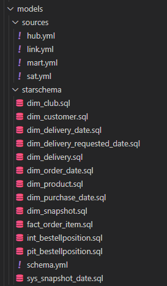

Modellieren Sie ein Sternschema auf das Willibald-DWH-Datenmodell.
Setzen Sie das von Ihnen modellierte Sternschema in dbt um.
SELECT * FROM
--wenn Uebung04 erfolgreich war und yml-files angelegt sind:
{{ source( 'sat_bestellung') }}
-- wenn Uebung04 nicht angefangen oder erfolgreich war nutzen Sie den physischen Namen des Quellobjekts
"willibald_dm_bis24200"."dwh_sl"."sat_bestellung"


Wir nutzen dbt um das Sternschema aufzubereiten. Alle Daten werden zunächst in einer flachen Ansicht zusammengestellt (revenue_star_flat).
{{ config(materialized='view') }}
WITH cte_addresses AS
(
SELECT a.[address_id],
a.district AS district_name,
ci.city AS city_name,
co.country AS country_name
FROM [vrs].[address] a
JOIN [vrs].[city] ci
ON ci.city_id = a.city_id
JOIN [vrs].[country] co
ON co.country_id = ci.country_id
),
cte_categories AS
(
SELECT DISTINCT fc.film_id,
SUBSTRING(
(
SELECT ','+ c.[name] AS [text()]
FROM [vrs].[category] c
WHERE fc.category_id = c.category_id
ORDER BY fc.film_id
FOR XML PATH (''), TYPE
).value('text()[1]','nvarchar(max)'), 2, 1000) [category_names]
FROM [vrs].[film_category] fc
)
SELECT p.payment_date,
ddp.date_id AS payment_date_id,
p.amount,
r.rental_date,
ddrent.date_id AS rental_date_id,
r.return_date,
ddretu.date_id AS return_date_id,
DATEDIFF(DAY, r.rental_date, r.return_date) AS rental_duration_days_actual,
f.rental_duration AS rental_duration_days_permitted,
f.rental_rate AS film_rental_rate,
f.film_id,
f.title AS film_title,
f.release_year AS film_release_year,
l.[name] AS film_language_name,
f.[length] AS film_length,
ca.category_names AS film_category_names,
s.store_id,
RANK() OVER (ORDER BY sd.city_name, sd.country_name, sd.district_name) AS store_address_id,
sd.city_name AS store_city_name,
sd.country_name AS store_country_name,
sd.district_name AS store_district_name,
RANK() OVER (ORDER BY cd.city_name, cd.country_name, cd.district_name) AS customer_address_id,
cd.city_name AS customer_city_name,
cd.country_name AS customer_country_name,
cd.district_name AS customer_district_name
FROM [vrs].[payment] p
JOIN [vrs].[rental] r
ON r.rental_id = p.rental_id
JOIN [vrs].[inventory] i
ON i.inventory_id = r.inventory_id
JOIN [vrs].[film] f
ON f.film_id = i.film_id
JOIN [vrs].[language] l
ON l.language_id = f.language_id
JOIN cte_categories ca
ON ca.film_id = f.film_id
JOIN [vrs].[store] s
ON s.store_id = i.store_id
JOIN cte_addresses sd
ON sd.address_id = s.address_id
JOIN [vrs].[customer] cu
ON cu.customer_id = p.customer_id
JOIN cte_addresses cd
ON cd.address_id = cu.address_id
JOIN vrs_dm.dim_date ddp
ON ddp.date_iso_id = CAST(CONVERT(CHAR(8), p.payment_date, 112) AS INT)
JOIN vrs_dm.dim_date ddrent
ON ddrent.date_iso_id = CAST(CONVERT(CHAR(8), r.rental_date, 112) AS INT)
LEFT JOIN vrs_dm.dim_date ddretu
ON ddretu.date_iso_id = CAST(CONVERT(CHAR(8), r.return_date, 112) AS INT)
Jetzt können die Daten der einzelnen Dimensionen- und Faktentabellen einfach aus dem dbt-Modell revenue_star_flat "herausgeschnitten" werden:
SELECT
[payment_date_id]
,[rental_date_id]
,[return_date_id]
,[film_id]
,[store_id]
,[store_address_id]
,[customer_address_id]
,[payment_date]
,[rental_date]
,[return_date]
,[amount]
,[film_rental_rate]
,[rental_duration_days_actual]
,[rental_duration_days_permitted]
FROM {{ ref('revenue_star_flat') }}
SELECT DISTINCT
[film_id]
,[film_title]
,[film_release_year]
,[film_language_name]
,[film_length]
,[film_category_names]
FROM {{ ref('revenue_star_flat') }}
SELECT DISTINCT
[customer_address_id]
,[customer_city_name]
,[customer_country_name]
,[customer_district_name]
FROM {{ ref('revenue_star_flat') }}
Im Fakt sind drei Datümer angelegt: Payment, Return und Rental Date. Gängige OLAP- und BI-Tools erwarten pro Datum eine Dimension. Aus der Datumsdimensions-Tabelle werden deshalb drei Views abgeleitet:
dim_payment_date.sql
{{ config(materialized='view') }}
SELECT [date_id] AS payment_date_id
,[sql_date] AS payment_date
,[day]
,[day_of_week]
,[week]
,[month]
,[quarter]
,[year]
,[day_of_year]
,[day_text]
,[month_text]
,[quarter_text]
,[day_text_abbrev]
,[month_text_abbrev]
,[ldm]
,[ldq]
,[ldy]
,[is_bus_day]
,[is_weekday]
,[is_holiday]
,[rpt_hdr_long]
,[rpt_hdr_short]
FROM vrs_dm.dim_date
dim_return_date.sql
{{ config(materialized='view') }}
SELECT [date_id] AS return_date_id
,[sql_date] AS return_date
,[day]
,[day_of_week]
,[week]
,[month]
,[quarter]
,[year]
,[day_of_year]
,[day_text]
,[month_text]
,[quarter_text]
,[day_text_abbrev]
,[month_text_abbrev]
,[ldm]
,[ldq]
,[ldy]
,[is_bus_day]
,[is_weekday]
,[is_holiday]
,[rpt_hdr_long]
,[rpt_hdr_short]
FROM vrs_dm.dim_date
In dbt müssen lediglich für jede Tabelle / View eine *.sql-Datei im Projektordner unter "models" angelegt werden.
Anschließend kann mit dbt run das Sternschema auf dem Server angelegt werden.
